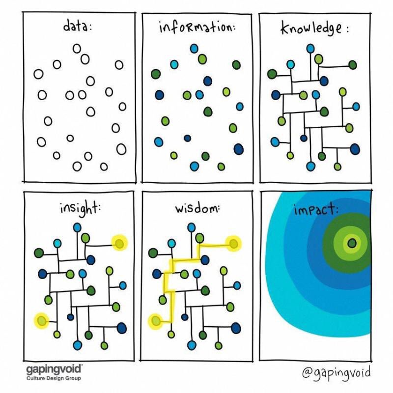

Synthesis
1
Synthesis
2
Synthesis
3
Capitalism
3.1
Pre-Capitalism
3.2
Capitalism is a Legal Order
3.3
Capitalism is Power
3.4
Capitalism is Growth
3.5
Capitalism is Plunder
3.6
Capitalism is Fear
3.7
Capitalism is Cancer
3.8
Post-Capitalism
I Appendices
Appendices
A
About
B
Links
C
NEWS
On Github
Synthesis
2
Synthesis
